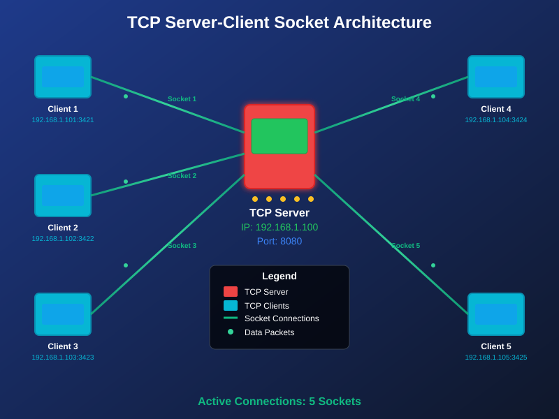

TCP Client
A **TCP client** is a program that initiates a connection to a TCP server. Unlike a server that listens for connections, the client actively seeks out and establishes a connection with a specific server on a designated IP address and port.
Building a TCP Client in Node.js
Node.js's built-in net module is used to create a TCP
client. The core method for this is net.createConnection().
-
1. Client Creation and Connection
The
JavaScriptnet.createConnection()method takes an object withportandhostproperties (or a simpler set of arguments) to specify where to connect. This method returns asocketobject, which represents the active connection to the server.const net = require('net'); const client = net.createConnection({ port: 3000, host: 'localhost' }, () => { // This code runs once the connection is successfully established console.log('Connected to server!'); // Send an initial message to the server client.write('Hello, server!'); });The
clientvariable is asocketobject, similar to the one on the server side, allowing for both reading and writing. -
2. Handling Communication
The
socketobject for the client is also anEventEmitter. You use the sameon()method to listen for events from the server.**Receiving Data:** Use the
JavaScript'data'event to handle incoming messages from the server. The data is received as aBuffer.client.on('data', (data) => { console.log(`Received from server: ${data.toString()}`); });**Sending Data:** Use the
JavaScriptclient.write()method to send messages to the server.// This could be inside a function or a loop client.write('Another message from the client.');
Handling Disconnections and Errors
Proper error handling is crucial for reliable network applications. You need to account for both graceful disconnections and unexpected network failures.
-
1. If the Server Disconnects
When the server gracefully closes its connection, the client's socket will emit an
JavaScript'end'event. This is the proper way to handle a server-initiated disconnection.client.on('end', () => { console.log('Server disconnected.'); // You can perform cleanup or attempt to reconnect here }); -
2. If the Client Disconnects
The client can close its own connection using
client.end(). This will also trigger the'end'event on the server's side. -
3. Handling Errors in Both Cases
The most critical event for error handling is
'error'. This event is emitted if a network error occurs, such as:- The server is not running when the client tries to connect.
- The connection is forcibly closed due to a network issue.
- An attempt to write data fails.
You should always have an
JavaScript'error'listener on your socket to prevent your program from crashing.client.on('error', (err) => { console.error(`Client error: ${err.message}`); // Example: If the server is offline, the error message will be "connect ECONNREFUSED 127.0.0.1:3000" client.destroy(); // Always destroy the socket after an error to ensure a clean state });
Full Client Example
Here is a complete, well-structured TCP client example that connects to the server and handles common events.
JavaScriptconst net = require('net');
const client = net.createConnection({ port: 3000, host: 'localhost' }, () => {
console.log('Client: Connected to server!');
client.write('Hello from the client!');
});
// Event listener for data from the server
client.on('data', (data) => {
console.log(`Client: Received from server: ${data.toString()}`);
});
// Event listener for graceful server disconnection
client.on('end', () => {
console.log('Client: Server disconnected.');
});
// Event listener for any network errors
client.on('error', (err) => {
console.error(`Client: Error occurred: ${err.message}`);
});
// Event listener for the socket being fully closed
client.on('close', () => {
console.log('Client: Connection closed.');
});
// You can use a timer to simulate sending more messages
setInterval(() => {
client.write('Pinging the server...');
}, 5000);
To run this client, save the code as a file (e.g.,
client.js), ensure your server is running, and then execute
node client.js in your terminal.

Server with multiple clients
